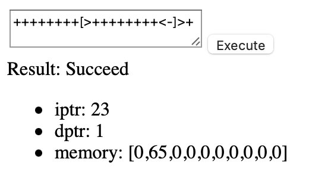
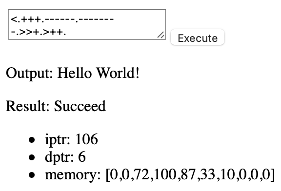
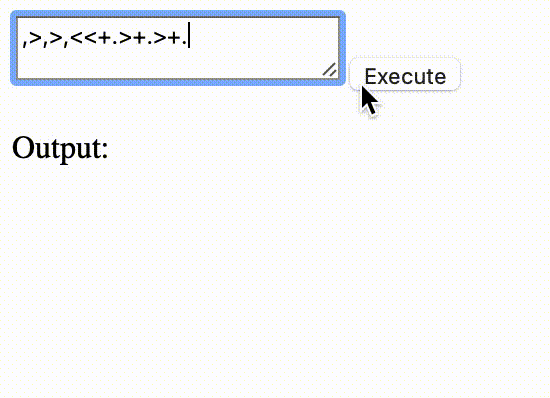
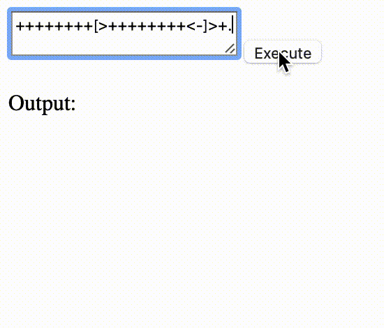

Halogenの利用
続いて、GUIでBrainfuckを動かすことをやってみる。
GUIのフレームワークとして、ここではpurescript-halogenを使ってみる。
Halogenについてはまだ勉強中で、この記事は解説記事というより勉強記録である(いままでの記事もそうではあるのだが)。
% spago install halogen
雛形
src/Main.pursを以下のようにする。
ここのコードはほとんどHalogen Guideと同様。
関数名的におそらく、body要素を取得して、その中でcomponentを走らせるのだと思う。
module Main where
import Prelude
import Effect (Effect)
import Halogen.Aff (awaitBody, runHalogenAff) as HA
import Halogen.VDom.Driver (runUI)
import Component (component)
main :: Effect Unit
main = HA.runHalogenAff do
body <- HA.awaitBody
runUI component unit body
componentはsrc/Component.pursで定義する。とりあえず雛形を作成。
module Component where
import Prelude
import Halogen as H
import Halogen.HTML as HH
data Action
= Dummy
type State =
{}
initialState :: forall input. input -> State
initialState _ =
{}
component :: forall query input output m. H.Component query input output m
component =
H.mkComponent
{ initialState
, render
, eval: H.mkEval $ H.defaultEval { handleAction = handleAction }
}
render :: forall m. State -> H.ComponentHTML Action () m
render state =
HH.p_ [ HH.text "Hello" ]
handleAction :: forall output m. Action -> H.HalogenM State Action () output m Unit
handleAction =
case _ of
Dummy ->
pure unit
Halogen Guide 02の2段落目によると、Componentとは、
「入力を受け付けて、HTMLを生成するもの」のこと。さらにComponentは内部状態を持っている。そして何かイベントを定義することができ、それに応じて内部状態を変えたり、副作用を起こしたりできる。
Halogenにおいて、状態は State、イベントは Action、と呼ばれる。renderでHTMLを生成することができる。handleActionで Action を補足し、何かしらの処理を行うことができる。
Elmとの比較でいうと、State が Model、Action が Msg、render が view、handleAction が update に当たる。
何やら各関数の型がごついので、これについて一応補足しておく。
型変数query、outputに関しては、複数のコンポーネントを作った場合にそれら同士のやりとりで使うようだが、今回は必要ないため、型変数のままにしておく。
H.ComponentHTML Action () mの()についても同様に、複数コンポーネントを扱う場合に関わってくるものなので、今回は必要ない。
inputは、コンポーネントの状態を初期化するときに指定する引数の型。これは入力エリア作成のときに利用する。
mはモナドで、handleActionで副作用を扱うときに必要となる。
後でAff関係の処理を書きたいときに、MonadAff mの型クラス制約を追加する (実際は、runUIのときにmはAffに推論される)。
この時点でbundle-appしてみる。
% spago bundle-app -t dist/Main.js
dist/にて以下のhtmlファイルを作って開くと、Helloとだけ表示される。
<!DOCTYPE html>
<html>
<head>
<meta charset="utf-8">
</head>
<body>
<script src="Main.js"></script>
</body>
</html>
仕様
- プログラム入力エリアにプログラムを入力し、実行ボタンを押すとプログラムが実行される
- 実行結果と実行後の
iptr、dptr、memoryを表示する。
- 実行時に出力命令を踏んだときに、出力エリアに文字が表示される。
- 実行時に入力命令を踏んだときに、入力エリアが出現。それまでプログラムは停止し、入力を確定すると再開する。
1と2は簡単。3はBrainfuck.State.Stateの内部状態をダンプする関数を実装すれば良いだけなので、難しくない。
4はHalogen GuideのSubscriptionの項を読むとできる。
5が結構悩ましく、2つの方法が思いついた。
interpProgramやinterpCommandを使わず、handleActionの中でInterpを逐次評価する。すると入力処理はActionの中で自然に扱える。- avarを使い、BrainfuckインタプリタとComponent間でデータのやりとりをする。
後者が実装が楽なのでこれを用いる。
プログラム入力エリアと実行結果エリアの作成
Stateの追加
src/Component.pursに戻る。以下のインポート文を追加。
import Brainfuck (run) as B
import Brainfuck.Interp.Stream (defaultStream) as BIS
import Brainfuck.Interp.Log (noLog) as BIL
import Brainfuck.State (State(..)) as BS
import Brainfuck.Interp (InterpResult) as BI
import Brainfuck.Program (fromString) as BP
import Data.Maybe (Maybe(..))
import Data.Either (Either(..))
import Effect.Aff.Class (class MonadAff)
import Effect.Class (liftEffect)
import Halogen.HTML.Events as HE
import Halogen.HTML.Properties as HP
状態を決める。
type State =
{ program :: String
, result :: Maybe (BI.InterpResult Unit)
}
initialState :: forall input. input -> State
initialState _ =
{ program: ""
, result: Nothing
}
次のActionを定義する。
ChangeProgram: プログラム入力エリアが変更された場合に起こる。ExecuteProgram: プログラム実行ボタンが押されたときに起こる。
data Action
= ChangeProgram String
| ExecuteProgram
Viewは次のようにする。プログラム入力エリア、実行ボタン、実行結果を表示する。
入力が変化したとき、クリックされたときはそれぞれHE.onValueChange、HE.onClickで補足できる。
関数の引数に、起こるActionを指定する。
render :: forall m. State -> H.ComponentHTML Action () m
render state =
HH.div_
[ programArea
, case state.result of
Just res ->
interpResult res
Nothing ->
HH.div_ []
]
programArea :: forall w. HH.HTML w Action
programArea =
HH.div_
[ HH.textarea [ HE.onValueChange ChangeProgram ]
, HH.button [ HE.onClick (\_ -> ExecuteProgram) ] [ HH.text "Execute" ]
]
interpResult :: forall w i. BI.InterpResult Unit -> HH.HTML w i
interpResult { result, state } =
let { iptr, dptr, memory } = BS.dump state
message =
case result of
Right _ ->
"Succeed"
Left err ->
show err
in
HH.div_
[ HH.div_ [ HH.text ("Result: " <> message) ]
, HH.div_
[ HH.ul_
[ HH.li_ [ HH.text ("iptr: " <> show iptr) ]
, HH.li_ [ HH.text ("dptr: " <> show dptr) ]
, HH.li_ [ HH.text ("memory: " <> show memory) ]
]
]
]
handleActionを実装。liftAffを使う都合上、MonadAffの型クラス制約を加える。
handleAction :: forall output m. MonadAff m => Action -> H.HalogenM State Action () output m Unit
handleAction =
case _ of
ChangeProgram program ->
H.modify_ _ { program = program }
ExecuteProgram -> do
{ program } <- H.get
res <- liftEffect $ B.run BIS.defaultStream BIL.noLog (BP.fromString program)
H.modify_ _ { result = Just res }
componentにもMonadAffを加える。
component :: forall query input output m. MonadAff m => H.Component query input output m
bundle-appすると以下のようにテキストエリアとボタンが出現し、テキストエリアにBrainfuckプログラムを入力してExecuteボタンを押すと、実行結果が下に出力される。
本当はCSSをいじって見栄えをよくしたいが、今回はやらない。

実行中は実行ボタンが押せないようにする
Brainfuckプログラムが多重実行されるのを防ぐために、実行が終わるまでボタンが押せないようにする。
Stateに実行可能かどうかのフラグを追加する。
type State =
{ -- 略
, isExecutable :: Boolean
}
initialState _ =
{ -- 略
, isExecutable: true
}
isExecutableを使ってボタンが押せるか押せないかを設定。
render state =
HH.div_
[ programArea state.isExecutable -- 引数追加
-- 略
]
-- 引数追加
programArea :: forall w. Boolean -> HH.HTML w Action
programArea isExecutable =
HH.div_
[ HH.textarea [ HE.onValueChange ChangeProgram ]
, HH.button
[ HE.onClick (\_ -> ExecuteProgram)
, HP.enabled isExecutable -- 追加
]
[ HH.text "Execute" ]
]
実行時にisExecutable = falseにして、実行後にisExecutable = trueにする。
handleAction =
-- 略
ExecuteProgram -> do
{ program } <- H.get
H.modify_ _ { result = Nothing, isExecutable = false }
res <- liftEffect $ B.run BIS.defaultStream BIL.noLog (BP.fromString program)
H.modify_ _ { result = Just res, isExecutable = true }
出力エリアの作成
halogen-subscriptionsパッケージを利用する。
% spago install halogen-subscriptions
halogen-subscriptionsを使うと、componentの外部からActionを通知することができるようになる。これを用いて、以下の処理を実装する。
Branfuck.Stream.Streamのoutputフィールドは、Output CharというActionを通知する。Output Charを通知すると、componentは文字を出力する。
そのために、Halogen専用のStreamを作成する必要がある。問題はそのStreamをどこに置くかだが、これは2通り考えられる。
- Componentのinputとして与える。これは
Main.pursのrunUIの引数で与えられる。
Stateのフィールドとして与え、その初期化はhandleActionで行う。
後者の欠点はStreamが常にMaybeに包まれてしまうことだが、前者に比べると実装が簡単なので後者を採用する。
まず以下のインポート文を追加。
import Brainfuck.Interp.Stream (Stream(..)) as BIS
import Data.String.CodeUnits (singleton) as CodeUnits
import Data.Traversable (for_)
import Effect.Aff (Aff)
import Effect.Aff.Class (liftAff)
import Halogen.Subscription as HS
for_関数を使いたいので、以下の関連パッケージをインストール。
spago install foldable-traversable
State、renderの追加
出力結果をoutputとして、Stateに持たせる。StreamもStateに持たせる。
type State =
{ --- 略
, streamMay :: Maybe (BIS.Stream Aff)
, output :: String
}
initialState _ =
{ --- 略
, streamMay: Nothing
, output: ""
}
Viewにて、出力エリアoutputAreaを追加。
render state =
HH.div_
[ programArea state.isExecutable
, outputArea state.output -- 追加
, case state.result of
Just res ->
interpResult res
Nothing ->
HH.div_ []
]
-- 追加
outputArea :: forall w i. String -> HH.HTML w i
outputArea output =
HH.div_
[ HH.p_ [ HH.text ("Output: " <> output ) ] ]
Actionの追加
以下の2つの値を追加する。
Initialize: componentの初期化の際に起こる。Output Char: Branfuckの出力命令を踏んだときに起こる。
data Action
= Initialize -- 追加
| ChangeProgram String
| ExecuteProgram
| Output Char -- 追加
componentの初期化の処理をInitializeに任せるために、H.defaultEvalのinitializeフィールドを設定する。
component =
H.mkComponent
{ -- 略
, eval: H.mkEval $ H.defaultEval
{ handleAction = handleAction
, initialize = Just Initialize -- 追加
}
}
Streamの作成
handleActionのcase文に、Initializeを付け足す。
handleAction =
case _ of
Initialize -> do
{ emitter, listener } <- liftEffect HS.create
_ <- H.subscribe emitter
H.modify_ _ { streamMay = Just $ createStream listener }
-- 略
createStream :: HS.Listener Action -> BIS.Stream Aff
createStream listener = BIS.Stream { input, output }
where
input = pure 'N'
output c =
liftEffect $ HS.notify listener (Output c)
Output cを追加。cをoutputに付け足す処理を行う。
handleAction =
case _ of
-- 略
Output c ->
H.modify_ (\s -> s { output = s.output <> (CodeUnits.singleton c) })
HS.createはEmitter aとListener aを返す関数。Emitter aとはイベントの受信者であり、Listener aはイベントの送信者である。
ここでのイベントとはa型の値のことである。StringでもIntでもなんでもありえるが、H.subscribeの都合上Actionをイベントとする。
H.subscribe emitterを使うと、emitterで受け取ったActionをhandleActionに回すことができる。
HS.notify listener xを使うと、listenerに紐づいたemitterに対して値xを送ることができる。
続いて、ExecuteProgramを修正。streamを使ってBrainfuckプログラムを走らせる。outputは実行の度に空に初期化しておく。
handleAction =
case _ of
-- 略
ExecuteProgram -> do
{ program, streamMay } <- H.get
for_ streamMay \s -> do
H.modify_ _ { output = "" , result = Nothing, isExecutable = false }
res <- liftAff $ B.run s BIL.noLog (BP.fromString program)
H.modify_ _ { result = Just res, isExecutable = true }
(補足) for_について。これは他言語のforループみたいに「与えられた配列一つ一つに対して何か処理をする」ような場合に用いられるが、
以下のように、「Maybe型の値がJustなら何か処理を行い、Nothingなら何もしない」ような場合にも使える。
case文を書かずに済むので、コードが若干見易くなる。
bundle-appしてみると、Hello, Worldのプログラムが動くようになる。

入力エリアの作成
avarを利用する。
% spago install avar
avarパッケージはAVar aを提供する。これは、a型の値が入る「非同期の変数(asynchronous variable)」を表す。
「非同期の変数」と聞くとよく分からないが、ソケット通信におけるソケットのようなものだと理解すれば良さそう。
このAVar aを介してデータのやりとりを行う。
AVar aに対しputで値を入れることができ、
takeで値を取り出すことができる。
大事なのは、take関数は変数に値が入るまで待機するという点である。よって、以下の動作を実現できる。
- 入力命令
,を踏むと、入力エリアが出現(これはH.notifyを利用すれば可能)
take関数でAVar Charに値が入ってくるまで待つ- 入力エリアに文字を入力し、確定ボタンを押すと、
put関数によってAVar Charに値が入る。
- 待機中だった
take関数が完了し、Brainfuckインタプリタの動作が再開する。
以下のインポート文を追加しておく。
import Effect.Aff.AVar (AVar, put, take) as AVar
import Data.String.CodeUnits (take, toChar) as CodeUnits
Stateの追加
以下のフィールドを追加。
avar: Brainfuckインタプリタと入力エリアをつなぐ変数input: 入力エリアに入っている文字isInputEnabled: 入力エリアが表示されているかどうか
type State =
{ -- 略
, avar :: AVar.AVar Char
, input :: String
, isInputEnabled :: Boolean
}
emptyを利用することで
空のAVar Charを作成することができるが、これはAffに包まれて返ってきてしまう。
そこで、以下のようにinitialStateの引数にAVar Charを指定する。
initialState :: AVar.AVar Char -> State
initialState avar =
{ -- 略
, avar
, input: ""
, isInputEnabled: false
}
この引数はどこから与えられるのかというと、src/Main.pursのrunUIで与えられる。
import Effect.Aff.AVar (empty) as AVar --追加
main = HA.runHalogenAff do
body <- HA.awaitBody
avar <- AVar.empty -- 追加
runUI component avar body -- 引数をunitからavarに変更。
inputがAVar Charになったのに伴い、src/Component.pursのcomponentの引数を変更。
component :: forall query output m. MonadAff m => H.Component query (AVar.AVar Char) output m
Actionの追加
3つのActionを追加
RequestInput: Brainfuckインタプリタが,命令を踏んだときに起こる。ChangeInput String: 入力エリアにテキストを入力したときに起こるConfirmInput: 入力確定ボタンが押されたときに起こる。
data Action
= -- 略
| RequestInput
| ChangeInput String
| ConfirmInput
handleActionに追加。
handleAction =
-- 略
RequestInput ->
H.modify_ _ { isInputEnabled = true }
ChangeInput input ->
H.modify_ _ { input = input }
ConfirmInput -> do
{ avar, input } <- H.get
case CodeUnits.toChar $ CodeUnits.take 1 input of
Just c -> do
H.modify_ _ { input = "", isInputEnabled = false } -- (*1)
liftAff $ AVar.put c avar -- (*2)
Nothing ->
pure unit
(注意) (*1)と (*2)を逆にすると正常に動作しないことに注意。,が2回以上現れるプログラムで、入力エリアが1度しか現れない。
その理由はisInputEnabledがfalseになるタイミングと2回目のRequestInputが投げられるタイミングを考えると分かる。
BrainfuckとComponent間でのデータのやりとりはある種の通信と捉えられるが、通信を扱うときには処理を行うタイミングについてより慎重になる必要がありそう。
streamがavarを使えるように、createStreamの引数を変更する。
handleAction =
case _ of
Initialize -> do
{ emitter, listener } <- liftEffect HS.create
_ <- H.subscribe emitter
H.modify_ \s -> s { streamMay = Just $ createStream listener s.avar }
-- 略
createStream :: HS.Listener Action -> AVar.AVar Char -> BIS.Stream Aff
createStream listener avar = BIS.Stream { input, output }
where
input = do
liftEffect $ HS.notify listener RequestInput
liftAff $ AVar.take avar
output c =
liftEffect $ HS.notify listener (Output c)
renderの実装
入力エリアを実装する。
render state =
HH.div_
[ programArea state.isExecutable
-- 以下3行を追加
, if state.isInputEnabled
then inputArea
else HH.div_ []
, outputArea state.output
-- 略
]
-- 追加
inputArea :: forall w. HH.HTML w Action
inputArea =
HH.div_
[ HH.input
[ HP.type_ HP.InputText
, HE.onValueChange ChangeInput
]
, HH.button
[ HE.onClick (\_ -> ConfirmInput) ]
[ HH.text "input" ]
]
3文字の入力を促して、アルファベットを1ずらして出力するBrainfuckプログラムを書いてみる。

結果がbcdになってくれている。
プログラムの実行中の様子を可視化する
Brainfuckインタプリタの動きを可視化するためには、ステップごとのプログラムの状態をComponentに出力してあげる必要がある。
これを実装するには前回実装した、Brainfuck.Interp.LogのLog mを使えば良い。具体的には、以下の手順を実装する。
- Brainfuckインタプリタの各ステップで
Log mのonStateが呼ばれる。このときRequestLogState stateというActionが通知される。
RequestLogState stateをhandleActionで受け取り、Stateのフィールドとして格納される。renderでstateを描画する。
以下のimport文を追加。
import Brainfuck.Interp.Log (Log(..)) as BIL
import Brainfuck.Program (Program(..)) as BP
import Data.Array (mapWithIndex) as Array
import Effect.Aff (delay, Milliseconds(..))
Stateの定義
Log mをStateのフィールドに持たせる。
type State =
{ -- 略
, logMay :: Maybe (BIL.Log Aff)
, stateMay :: Maybe (BS.State)
}
initialState :: AVar.AVar Char -> State
initialState avar =
{ -- 略
, logMay: Nothing
, stateMay: Nothing
}
Logの定義
Logを作成する関数createLogStateを作る。これはRequestLogState stateを通知する。
createLog :: HS.Listener Action -> BIL.Log Aff
createLog listener = BIL.Log
{ onStart: pure unit
, onState
, onCmd: \_ -> pure unit
, onEnd: pure unit
}
where
onState state = do
liftEffect $ HS.notify listener (RequestLogState state)
liftAff $ delay (Milliseconds 100.0)
Actionの定義
RequestLogStateを追加。
data Action
= -- 略
| RequestLogState BS.State
handleActionのInitializeの際に、logMayをセットする。
RequestLogStateが起こると、stateMayに現在のプログラムの状態をセットする。
ExecuteProgramのB.runの引数にLogが指定できるよう修正。
handleAction =
case _ of
Initialize -> do
{ emitter, listener } <- liftEffect HS.create
_ <- H.subscribe emitter
H.modify_ \s ->
s { streamMay = Just $ createStream listener s.avar
, logMay = Just $ createLog listener -- 追加
}
RequestLogState state -> do
H.modify_ _ { stateMay = Just state }
ExecuteProgram -> do
{ program, streamMay, logMay } <- H.get
for_ streamMay \s ->
for_ logMay \l -> do
H.modify_ _ { output = "" , result = Nothing, isExecutable = false }
res <- liftAff $ B.run s l (BP.fromString program)
H.modify_ _ { result = Just res, isExecutable = true }
Viewの定義
現在の状態を表示するエリアを作成。
インストラクションポインタの指す命令、メモリの指す命令には色をつけて表示する。
memoryの表示については要素間の間隔が詰まっていて見づらいため、margin-rightを指定している。
render :: forall m. State -> H.ComponentHTML Action () m
render state =
HH.div_
[ -- 略
, case state.stateMay of
Just s ->
stateArea (BP.fromString state.program) s
Nothing ->
HH.div_ []
, -- 略
]
stateArea :: forall w i. BP.Program -> BS.State -> HH.HTML w i
stateArea program (BS.State { iptr, dptr, memory }) =
HH.div_
[ programLogArea iptr program
, memoryLogArea dptr memory
]
mapWithASpecialIndex :: forall a b. Int -> (a -> b) -> (a -> b) -> Array a -> Array b
mapWithASpecialIndex j fThen fElse =
Array.mapWithIndex (\i x -> if i == j then fThen x else fElse x)
programLogArea :: forall w i. Int -> BP.Program -> HH.HTML w i
programLogArea iptr (BP.Program program) =
HH.div_ $
mapWithASpecialIndex iptr
(\cmd -> HH.span [ HP.style "background-color: salmon;" ] [ HH.text $ show cmd ])
(\cmd -> HH.span [ HP.style "background-color: white;" ] [ HH.text $ show cmd ])
program
memoryLogArea :: forall w i. Int -> Array Int -> HH.HTML w i
memoryLogArea dptr memory =
HH.div_ $
mapWithASpecialIndex dptr
(\dat -> HH.span [ HP.style "background-color: salmon; margin-right: 1em;" ] [ HH.text $ show dat ])
(\dat -> HH.span [ HP.style "background-color: white; margin-right: 1em;" ] [ HH.text $ show dat ])
memory
いい感じで可視化されている。

ソースコードとデモ
CSSやHTML要素の順番などを微調整したバージョンを
GitHubのRepositryに上げた。
実際に動くものをGitHub Pagesに上げた。
感想とまとめ
Brainfuckの思い出
Brainfuckとの初めての出会いはBrainfuckをJavaScriptを使って実装する動画を見つけたところからだった。
当時プログラミングは学んでおらず、書いていることや喋っている意味はまったく分からなかった。分からないけど、なんか面白そう、とは思っていた。
その2、3年後くらいにC言語を学び、力試しとしてBrainfuckを作った。とはいえ単に文字列を1文字づつ見ていくだけだし、入出力はそれぞれprintfとscanfで行う簡単なものだった。
さらに年月は経ち、大学のJavaの授業でSwingを使ったGUIアプリ作成の課題があったのだが、電卓にBrainfuckを組み込んだ。
オブジェクト指向に入門したのがこのときで、Brainfuckインタプリタをクラスとして分離して汎用性を持たせようとした記憶がある。
入力命令は面倒だと考え実装しなかった。
そして今回、PureScriptでBrainfuckを作った。
まとめ
PureScriptでBrainfuckインタプリタを作成した。インタプリタの骨組みを作り、それがCUI、GUI両方で使えることを示した。
インタプリタの動作の様子を可視化する仕組みも実装した。
Brainfuckなんて、抽象化を気にせずC言語で書くと、以下のように60行に満たない。
#include <stdio.h>
#define S_SIZE 1100
#define D_SIZE 31000
int main(void) {
char S[S_SIZE];
int data[D_SIZE] = { 0 };
int dp = 0;
int ip;
while (1) {
scanf("%s", S);
if (S[0] == 'q') break; // qを入力すると終了
for (ip = 0; S[ip] != 0; ip++) {
if (S[ip] == '>' && dp < D_SIZE) {
dp++;
} else if (S[ip] == '<' && dp > 0) {
dp--;
} else if (S[ip] == '+') {
data[dp]++;
} else if (S[ip] == '-') {
data[dp]--;
} else if (S[ip] == '.') {
printf("%c", data[dp]);
} else if (S[ip] == ',') {
scanf("%c", &data[ip]);
} else if (S[ip] == '[' && data[dp] == 0) {
int cnt = 1;
while (cnt != 0) {
ip++;
if (S[ip] == '\0') {
printf("Error\n");
return 0;
}
if (S[ip] == '[') cnt++;
else if (S[ip] == ']') cnt--;
}
} else if (S[ip] == ']' && data[dp] != 0) {
int cnt = -1;
while (cnt != 0) {
ip--;
if (ip < 0) {
printf("Error\n");
return 0;
}
if (S[ip] == '[') cnt++;
else if (S[ip] == ']') cnt--;
}
}
}
printf("\n");
}
return 0;
}
しかし今回PureScriptでBrainfuckを実装するにあたり、
- 命令を代数的データで扱う:
(文字の書き間違いにある程度は気づけるようになるし、
><+-.,[]以外の命令セットにも対応できるようになるため。
- 入出力に汎用性を持たせる。
- 可視化をする。
- 適当にモジュールに分割する
などの制約を自分に課した結果、結構実装が大変になった。そして想像以上に長い記事となってしまった。
しかし実装に当たって初めて使ったパッケージ(avar, refs, halogen-subscriptionsなど)もあったし、
実装に当たってモナド変換子を利用できたので非常に勉強になった。